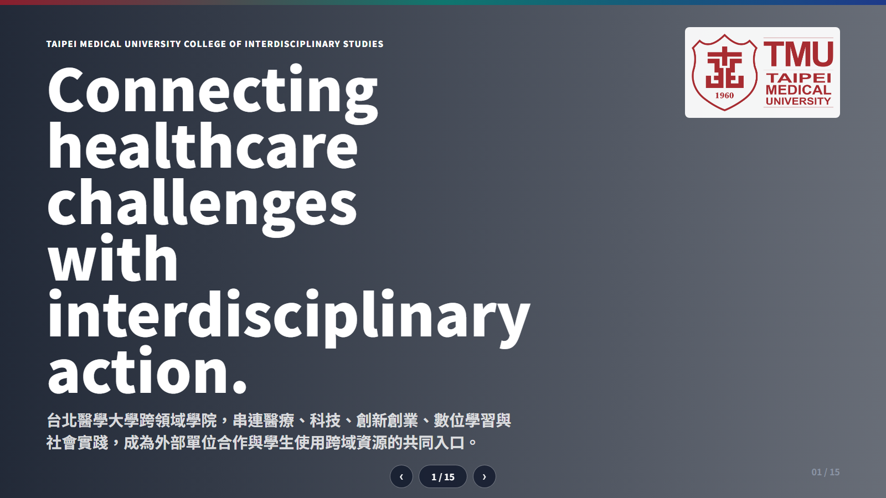

臺北醫學大學跨領域學院
台北醫學大學跨領域學院，串連醫療、科技、創新創業、數位學習與社會實踐，成為外部單位合作與學生使用跨域資源的共同入口。
醫療創新已經不只是醫療端的問題
AI、資料、永續、高齡照護、社區健康與社會處方箋，都需要能跨越學科、場域與組織邊界的合作機制。
真實場域
從醫療與健康照護需求出發，避免創新停留在概念。
多元人才
讓不同背景的學生、教師與外部夥伴共同解題。
可用資源
課程、空間、VR LAB、數位學習與團隊進駐資源。
合作路徑
從活動、課程、專題、競賽到長期合作都能承接。
單位簡介：跨領域學院
本校於 2018 年成立第十一個學院「跨領域學院」，專司發展醫療外知識與技能領域之教學，作為通識、專業與臨床教育之間的溝通橋樑。
三中心一學程
規劃跨領域課程、微學程與教師社群，建立系統化學習路徑。
以課程與輔導培育創新能力，銜接校內外新創資源。
導入國內外優質磨課師課程，支持自主學習與全球共學。
以人工智慧為導向，結合生醫知識與實際應用。
我們不是單一課程單位，而是跨域合作平台。
跨領域學院把校內外資源轉譯成學生能使用、教師能共創、外部單位能合作的學習與實作系統。
以醫學大學的基礎，發展跨領域教育；讓學生建構第二專長，並能與醫療專業進行科際整合。
Source: CIS official profile我們培養能與外部單位共同解題的人。
主動探索
看見問題、界定問題，理解不同利害關係人的需求。
創新實踐
把想法推進為可測試、可溝通、可迭代的解方。
團隊整合
在跨學科團隊中溝通、協作並推動共同成果。
全球適應
理解國際學習資源與全球議題，建立開放視野。
自主學習
以數位工具與長期自學能力，持續更新專業組合。
跨領域學習中心：把學習路徑系統化。
中心統整校內外學習資源，規劃具前瞻趨勢的跨領域學分學程，協助教師推動跨領域教學與跨校合作。
跨域課程設計
協助學生以更清楚的路徑建立第二專長。
微學程規劃
以模組化方式支援彈性學習與成果累積。
教師社群
促進教師之間共同開課、共創教學。
跨校合作
運用異質學校聯盟，建立更廣的合作平台。
創新創業教育中心：把創意轉成實質價值。
創創中心以系統性課程與個別化輔導，發掘並培植潛在創業團隊，銜接校內育成機制與校外新創資源。
適合合作的題型
企業或組織提供真實問題，與學生團隊共同探索解方。
以設計思考、商業模式、原型測試或 Pitch 訓練形成短期成果。
支持有潛力的團隊使用空間並接受創業訓練輔導。
數位自學中心：讓學習不受時間與場域限制。
中心導入國內外優質磨課師課程，與全球共學；並以自學基金、微學分微學程與智慧學習指引，支持學生建立自主學習習慣。
國際課程導入
擴展學生的數位學習視角。

智慧學習指引
銜接微學分與微學程制度。
智慧醫療跨領域學士學位學程：面向 AI Healthcare 的完整路徑。
由跨領域學院推動，以人工智慧為導向，結合生醫知識與應用，涵蓋醫學基礎、AI 核心理論與實際應用。
給醫學領域學習者一條智慧生醫新道路，使其能靈活應對未來世界變化與複雜議題。
AI Healthcare Bachelor Program學院資源不只展示，而是可被使用。
杏春樓 1F / B1F
研討室、教室、進駐團隊與行政支援，承接課程與活動。
虛擬實境學習
提供 VR 體驗場域與課程合作，支援教師導入 VR 教案。
設備借用
以設備清單與 QR Code 流程管理借用，降低資源使用門檻。
團隊進駐
為創新創業團隊提供長期使用空間與輔導支援。
近期亮點讓合作有具體切入點。
公開頁面顯示，學院持續推出課程、營隊、競賽、國際合作與跨機構行動，適合外部單位從不同主題切入合作。
社會處方箋 MOU
跨領域學院與臺灣文學館、基督教芥菜種會簽署 MOU，共推社會處方箋與社會實踐。
暑期數位自學遊學營
以世界名校、國際證書與數位自學作為主題，強化學生自學與全球共學。
5G 加速器徵選活動
連結創新創業與外部產業活動，提供學生與團隊接觸新創生態的入口。
合作不只在校內，也面向國際與開放教育。
學院國際合作頁列出九州大學跨領域國際實習、Stanford Biodesign、國際開放教育合作、OE for SDGs 等資源；過往九州大學海外實習也以創新合作、全球議題與跨國團隊協作為核心。
跨國實習
以全球議題討論、工作坊與團隊報告訓練學生國際合作。
醫療創新方法
連結國際創新方法學，強化需求導向的醫療解題。
開放學習
透過國際開放教育資源擴大學習可近性。
永續議題
將健康、教育與社會永續議題納入跨域學習。
外部單位可以從四種合作開始。
合作入口
提供真實問題與場域觀察
講座、工作坊、專題課程
工具、資料、設備、案例
展示、媒合、團隊輔導
學生來這裡，不只是上課，而是把能力組合做出來。
跨領域學院提供的是一個可探索、可自學、可實作、可被輔導的環境。學生能依自己的主修與興趣，組合出面向未來醫療與健康產業的能力。
第二專長
透過課程、微學程與數位學習建立跨域能力。
實作經驗
以工作坊、專題、VR LAB 與創新創業活動累積作品。
團隊合作
與不同學系、教師與外部夥伴共同完成題目。
未來連結
接觸 AI Healthcare、創業、國際合作與社會實踐。
讓醫療創新合作，從一個清楚的入口開始。
台北醫學大學跨領域學院歡迎外部單位以議題、課程、活動、資源或實作場域切入合作，也歡迎學生使用學院資源，建立面向未來的跨域能力。